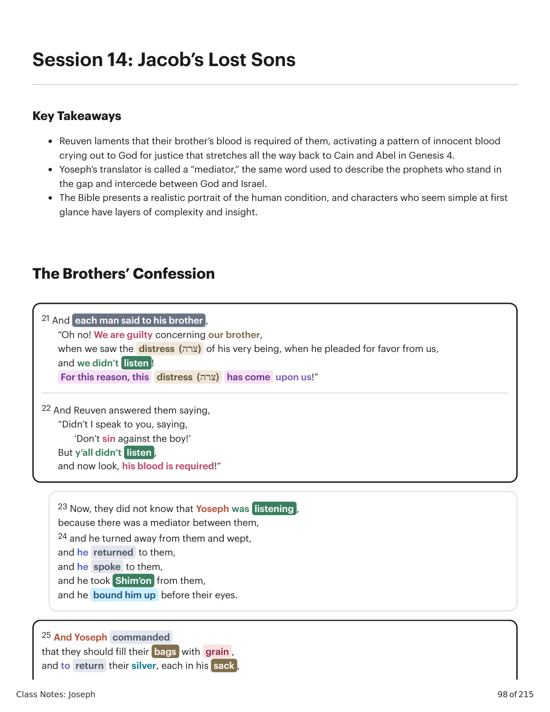
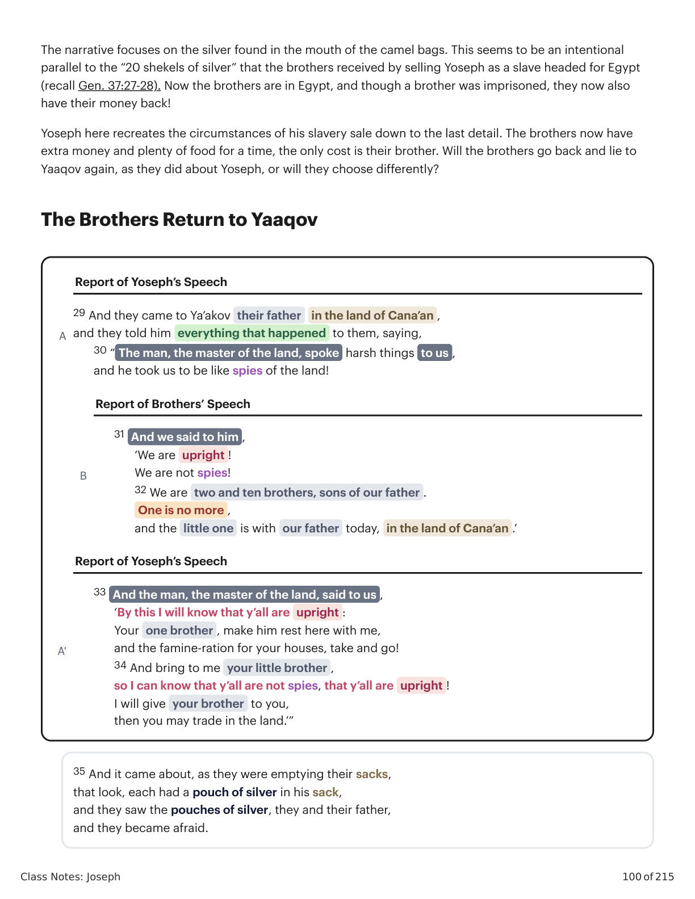
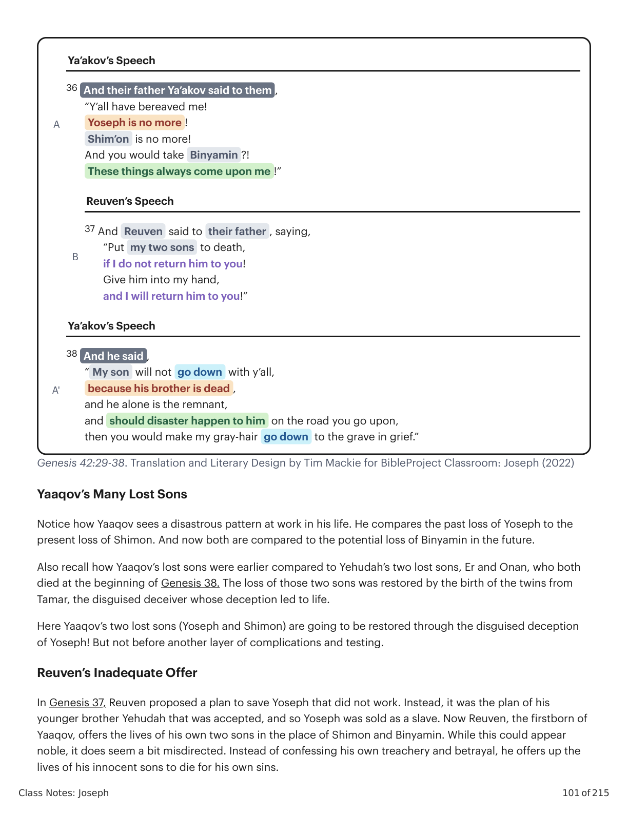

Os Filhos Perdidos de JacóJacob’s Lost Sons
Class Notes: Joseph
98 of 215
Session 14: Jacob’s Lost Sons
Key Takeaways
Reuven laments that their brother’s blood is required of them, activating a pattern of innocent blood
crying out to God for justice that stretches all the way back to Cain and Abel in Genesis 4.
Yoseph’s translator is called a “mediator,” the same word used to describe the prophets who stand in
the gap and intercede between God and Israel.
The Bible presents a realistic portrait of the human condition, and characters who seem simple at first
glance have layers of complexity and insight.
The Brothers’ Confession
21 And each man said to his brother ,
“Oh no! We are guilty concerning our brother,
when we saw the distress (צרה) of his very being, when he pleaded for favor from us,
and we didn’t listen !
For this reason, this
distress (צרה)
has come upon us!”
22 And Reuven answered them saying,
“Didn’t I speak to you, saying,
‘Don’t sin against the boy!’
But y’all didn’t listen ,
and now look, his blood is required!”
23 Now, they did not know that Yoseph was listening ,
because there was a mediator between them,
24 and he turned away from them and wept,
and he returned to them,
and he spoke to them,
and he took Shim’on from them,
and he bound him up before their eyes.
25 And Yoseph commanded
that they should fill their bags with grain ,
and to return their silver, each in his sack ,

Gênesis X:Y. Tradução e Design Literário por Tim Mackie para BibleProject Classroom: José (2021).Genesis X:Y. Translation and Literary Design by Tim Mackie for BibleProject Classroom: Joseph (2021).
Class Notes: Joseph
99 of 215
Genesis 42:21-28. Translation and Literary Design by Tim Mackie for BibleProject Classroom: Joseph (2022)
After Yoseph recreates the scenario of Genesis 37 by imprisoning Shimon as a test (recall that this test is set
on analogy to the snake and the test of Adam and Eve), his brothers begin processing the poetic justice of
their situation. And they do so in speeches filled with the language of the Cain and Abel story from Genesis 4.
Genesis 42
Genesis 4
Gen. 42:21 “We are guilty
concerning our brother”
Gen. 4:13 “My guilt/punishment is too great to bear!”
Gen. 42:22 “Didn’t I say, ‘Don’t sin
against the boy?’”
Gen. 4:7 “If you don’t do good, sin is crouching at the door; it’s
desire is for you, and you can rule it.”
Gen. 42:22 “Now look, his blood is
required”
Gen. 4:10 “The voice of your brother’s blood is crying to me from
the ground.”
Gen. 42:28 “What is Elohim doing
to us?!”
Gen. 4:10 “What is this you have done?!”
Comparing Genesis 42 and Genesis 4. Created by Tim Mackie for BibleProject Classroom: Joseph (2022).
Just as God confronted Cain after murdering his brother, now Yoseph confronts his brothers after they sold
him as a slave and pretended that he was murdered. This scene of Yoseph bringing his brothers' sin to light is
clearly being linked to God’s confrontation with Cain to bring his murderous sin to light.
Ill-Gotten Silver
and to give them rations (צדה) for the road.
And so it was done for them .
26 And they took up their grain onto their donkeys,
and they went from there,
27 and one opened up his sack , to give fodder to his donkey at the night-stop,
and he saw his silver,
and look, it was in the mouth of his bag .
28 And he said to his brothers,
“My silver has been returned ,
and look, its it my bag !”
And their hearts went out,
and they shuddered, each man to his brother, saying ,
“ What is this that Elohim is doing to us?! ”
| Ill-Gotten Silver |
|---|
| and to give them rations (צדה) for the road. | 26 And they took up their grain onto their donkeys, |
| And so it was done for them . | 27 and one opened up his sack , to give fodder to his donkey at the night-stop,
and they shuddered, each man to his brother, saying , |
and they went from there,
and he saw his silver,
and look, it was in the mouth of his bag . | “ What is this that Elohim is doing to us?! ” |
| 28 And he said to his brothers, | |
“My silver has been returned ,
and look, its it my bag !” | |
| And their hearts went out, | |
Gênesis X:Y. Tradução e Design Literário por Tim Mackie para BibleProject Classroom: José (2021).Genesis X:Y. Translation and Literary Design by Tim Mackie for BibleProject Classroom: Joseph (2021).
Class Notes: Joseph
100 of 215
The narrative focuses on the silver found in the mouth of the camel bags. This seems to be an intentional
parallel to the “20 shekels of silver” that the brothers received by selling Yoseph as a slave headed for Egypt
(recall Gen. 37:27-28). Now the brothers are in Egypt, and though a brother was imprisoned, they now also
have their money back!
Yoseph here recreates the circumstances of his slavery sale down to the last detail. The brothers now have
extra money and plenty of food for a time, the only cost is their brother. Will the brothers go back and lie to
Yaaqov again, as they did about Yoseph, or will they choose differently?
The Brothers Return to Yaaqov
A
29 And they came to Ya’akov their father
in the land of Cana’an ,
and they told him everything that happened to them, saying,
30 “ The man, the master of the land, spoke harsh things to us ,
and he took us to be like spies of the land!
B
31 And we said to him ,
‘We are upright !
We are not spies!
32 We are two and ten brothers, sons of our father .
One is no more ,
and the little one is with our father today, in the land of Cana’an .’
A'
33 And the man, the master of the land, said to us ,
‘By this I will know that y’all are upright :
Your one brother , make him rest here with me,
and the famine-ration for your houses, take and go!
34 And bring to me your little brother ,
so I can know that y’all are not spies, that y’all are upright !
I will give your brother to you,
then you may trade in the land.’”
35 And it came about, as they were emptying their sacks,
that look, each had a pouch of silver in his sack,
and they saw the pouches of silver, they and their father,
and they became afraid.
Report of Yoseph’s Speech
Report of Brothers’ Speech
Report of Yoseph’s Speech

Gênesis X:Y. Tradução e Design Literário por Tim Mackie para BibleProject Classroom: José (2021).Genesis X:Y. Translation and Literary Design by Tim Mackie for BibleProject Classroom: Joseph (2021).
Class Notes: Joseph
101 of 215
Genesis 42:29-38. Translation and Literary Design by Tim Mackie for BibleProject Classroom: Joseph (2022)
Yaaqov’s Many Lost Sons
Notice how Yaaqov sees a disastrous pattern at work in his life. He compares the past loss of Yoseph to the
present loss of Shimon. And now both are compared to the potential loss of Binyamin in the future.
Also recall how Yaaqov’s lost sons were earlier compared to Yehudah’s two lost sons, Er and Onan, who both
died at the beginning of Genesis 38. The loss of those two sons was restored by the birth of the twins from
Tamar, the disguised deceiver whose deception led to life.
Here Yaaqov’s two lost sons (Yoseph and Shimon) are going to be restored through the disguised deception
of Yoseph! But not before another layer of complications and testing.
Reuven’s Inadequate Offer
In Genesis 37, Reuven proposed a plan to save Yoseph that did not work. Instead, it was the plan of his
younger brother Yehudah that was accepted, and so Yoseph was sold as a slave. Now Reuven, the firstborn of
Yaaqov, offers the lives of his own two sons in the place of Shimon and Binyamin. While this could appear
noble, it does seem a bit misdirected. Instead of confessing his own treachery and betrayal, he offers up the
lives of his innocent sons to die for his own sins.
A
36 And their father Ya’akov said to them ,
“Y’all have bereaved me!
Yoseph is no more !
Shim’on is no more!
And you would take Binyamin ?!
These things always come upon me !”
B
37 And Reuven said to their father , saying,
“Put my two sons to death,
if I do not return him to you!
Give him into my hand,
and I will return him to you!”
A'
38 And he said ,
“ My son will not go down with y’all,
because his brother is dead ,
and he alone is the remnant,
and should disaster happen to him on the road you go upon,
then you would make my gray-hair go down to the grave in grief.”
Ya’akov’s Speech
Reuven’s Speech
Ya’akov’s Speech

Gênesis X:Y. Tradução e Design Literário por Tim Mackie para BibleProject Classroom: José (2021).Genesis X:Y. Translation and Literary Design by Tim Mackie for BibleProject Classroom: Joseph (2021).
Class Notes: Joseph
102 of 215
Yaaqov refuses this offer, as it will only result in more death. It’s better to cut his losses and move forward.
This portrait of Reuven, as a failed firstborn, repeats his failure from Genesis 37 and opens the way for his
younger brother Yehudah to propose an even more noble plan, which is precisely what’s going to happen.
Binyamin, the New Yoseph
Notice how Yaaqov’s response mirrors the response he gave when he was shown Yoseph’s garment.
Genesis 42:38
Genesis 37:35
And he said,
“My son will not go down with y’all,
because his brother is dead,
and he alone is the remnant,
and should disaster happen to him … you would make
my gray-hair go down to the grave in grief .”
And all his sons and all his daughters got
up to comfort him,
and he refused to be comforted,
and he said, “Surely, I will go down to my
son, grieving, to the grave !”
And his father wept for him.
Grieving in Genesis 42 and Genesis 37. Created by Tim Mackie for BibleProject Classroom: Joseph (2022).
Yoseph’s Brothers Take a Second Trip to Egypt
Genesis 43:1-15
43:1-5
Ya'akov & Yehudah Debate About Going Down to Egypt; Without Binyamin, They Cannot Return
• 43:3 “[Yoseph] swore an oath )(העד העד that we can’t see him with our brother”
• 43:5 “If you do not send him, we cannot go down”
43:6-7
Ya'akov & The Brothers Debate About Yoseph’s Demand to See Binyamin
43:8-15
Yehudah and Ya'akov Debate Going Down to Egypt With Binyamin
• 43:8 “Send the young boy )(נער with me!”
• 43:9a Yehudah swears to offers his life as a
substitute pledge )(ערבin place of Binyamin
• 43:9b “If I do not return [Binyamin] to you, it will be my sin against you all my days”
Genesis 43:15-44:13
| Binyamin, the New Yoseph |
|---|
| Notice how Yaaqov’s response mirrors the response he gave when he was shown Yoseph’s garment. | And all his sons and all his daughters got
up to comfort him,
and he refused to be comforted,
and he said, “Surely, I will go down to my
son, grieving, to the grave !”
And his father wept for him. |
Genesis 42:38
Genesis 37:35 | |
And he said,
“My son will not go down with y’all,
because his brother is dead,
and he alone is the remnant,
and should disaster happen to him … you would make
my gray-hair go down to the grave in grief .” | |
Gênesis X:Y. Tradução e Design Literário por Tim Mackie para BibleProject Classroom: José (2021).Genesis X:Y. Translation and Literary Design by Tim Mackie for BibleProject Classroom: Joseph (2021).
Class Notes: Joseph
103 of 215
Genesis 43:1-44:34. Literary Design by Tim Mackie for BibleProject Classroom: Joseph (2022).
This large section is the center of the center of the story of Yoseph and his brothers. It consists of three larger
units (Gen. 43:1-15, 43:15-44:13, and 44:14-34) designed as a symmetry.
The outer sections highlight a transformed Yehudah, who sees that their entire family is going to die if
Yaaqov won’t surrender the life of Binyamin. He is compelled to do the opposite of what he did to
Yoseph in Genesis 37, and he offers his own life in the place of Yoseph’s brother.
43:15-25
The Brothers Go Down to Egypt, Return the Silver, and Are Brought Into Yoseph’s House For A
Meal
• 43:16 Yoseph said to the one over his house, “Bring the men inside”
• 43:21-22 “We brought the [extra] silver in our hands … we don’t know who put it in our
bags!”
43:26-34
Yoseph Seats the Brothers for a Meal, Treating Binyamin With More Favor Than the Brothers
44:1-13
The Brothers Are Sent Back to Canaan, Binyamin Is Caught With the Silver Divination Cup
• 44:1-2 Yoseph said to the one over his house,
“Put silver in each man’s bag … and put my
silver cup in the bag of the little one”
• 44:8 “Look, we found silver in our bags and we returned it to you!”
Genesis 44:14-34
44:14
Yehudah & Brothers Return to Yoseph and Fall Down Before Him
44:15-17
Yoseph & Yehudah Discuss About the Stolen Silver Divination Cup
44:18-34
Yehudah’s Speech Before Yoseph
• Yehudah retells the events of 43:1-15:
• 44:33 “Let the young boy )(נער return back up with his brothers!”
• 44:32-34 He offers his own life as
a substitute pledge )(ערבin place of Binyamin and his
father
• 44:32 “If I do not return [Binyamin] to you, it will be my sin against my father for all my days
| It is also important to notice that Genesis 43-45 replays the main movements of the preceding Genesis 42. | However, each step of the narrative in Genesis 42 is developed in greater detail and drama by its parallel in | Genesis 43-45. In this way, the story feels like an intensified replay that forces the drama to its finish. |
|---|
| Reflection Question | Genesis 42
Plot Elements
Genesis 43-45 | Gen. 43:1–14 |
| How are tragic characters in the Bible valuable for modern readers? | Gen. 42:1–4
Yaaqov sends his sons to Egypt to buy grain )(שבר and get
food. | Gen. 44:1 |
| Gen. 42:5
Arrival in Egypt
Gen. 43:15–25 | |
| Gen. 42:6–16
First audience with Yoseph
Gen. 43:26–34 | |
| Gen. 42:17
Brothers in custody
Gen. 44:1–13 | |
| Gen. 42:25
Departure from Egypt with money secretly returned in the
bags | |
| Gen. 42:18–24
Second audience with Yoseph
Gen. 44:14–45:15 | |
| Gen. 42:25–28
Departure from Egypt
Gen. 45:16–24 | |
| Gen. 42:29–38
Sons report to Yaaqov
Gen. 45:25–28 | |
| Plot Elements of Genesis 42-45. Adapted from Godon J. Wenham, Genesis 16-50, 419. | |
Gênesis X:Y. Tradução e Design Literário por Tim Mackie para BibleProject Classroom: José (2021).Genesis X:Y. Translation and Literary Design by Tim Mackie for BibleProject Classroom: Joseph (2021).
Class Notes: Joseph
104 of 215
The inner section focuses on the climactic additional test that Yoseph forces the brothers to undergo.
With Binyamin now in Egypt, Yoseph can test their integrity even more precisely: he will create a
scenario where they are forced to choose between Binyamin and a load of silver, just they did in
Genesis 37.
This three-part section brings all the themes and conflict between Yoseph and his brothers to a climax,
as the brothers’ evil comes full circle upon them.
It is also important to notice that Genesis 43-45 replays the main movements of the preceding Genesis 42.
However, each step of the narrative in Genesis 42 is developed in greater detail and drama by its parallel in
Genesis 43-45. In this way, the story feels like an intensified replay that forces the drama to its finish.
Genesis 42
Plot Elements
Genesis 43-45
Gen. 42:1–4
Yaaqov sends his sons to Egypt to buy grain )(שבר and get
food.
Gen. 43:1–14
Gen. 42:5
Arrival in Egypt
Gen. 43:15–25
Gen. 42:6–16
First audience with Yoseph
Gen. 43:26–34
Gen. 42:17
Brothers in custody
Gen. 44:1–13
Gen. 42:25
Departure from Egypt with money secretly returned in the
bags
Gen. 44:1
Gen. 42:18–24
Second audience with Yoseph
Gen. 44:14–45:15
Gen. 42:25–28
Departure from Egypt
Gen. 45:16–24
Gen. 42:29–38
Sons report to Yaaqov
Gen. 45:25–28
Plot Elements of Genesis 42-45. Adapted from Godon J. Wenham, Genesis 16-50, 419.
Reflection Question
How are tragic characters in the Bible valuable for modern readers?
Gênesis X:Y. Tradução e Design Literário por Tim Mackie para BibleProject Classroom: José (2021).Genesis X:Y. Translation and Literary Design by Tim Mackie for BibleProject Classroom: Joseph (2021).